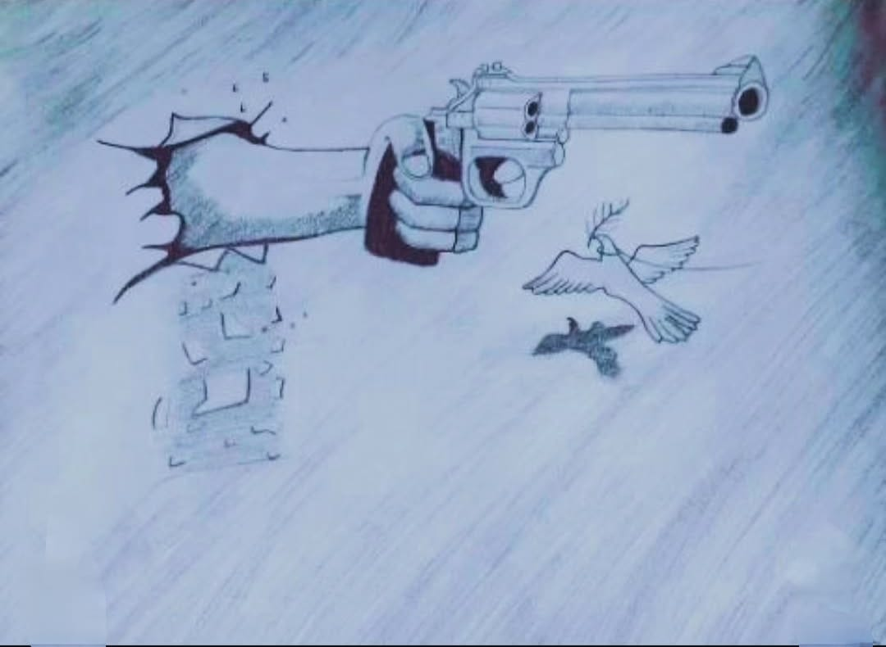

3D Gun Fire

Medium: Pencil Art
Year: 2022
This Artwork Represents 3D Gun Fire In A Detailed Pencil Art Style,
The 3D Gun Fire Artwork Dramatically Showcases Power, Motion, And Intensity, With Realistic Depth, Fiery Effects,
And Sharp Details That Create A Strong Visual Impact, Symbolizing Energy, Action, And The Raw Force Captured In A
Stylized Artistic Form.